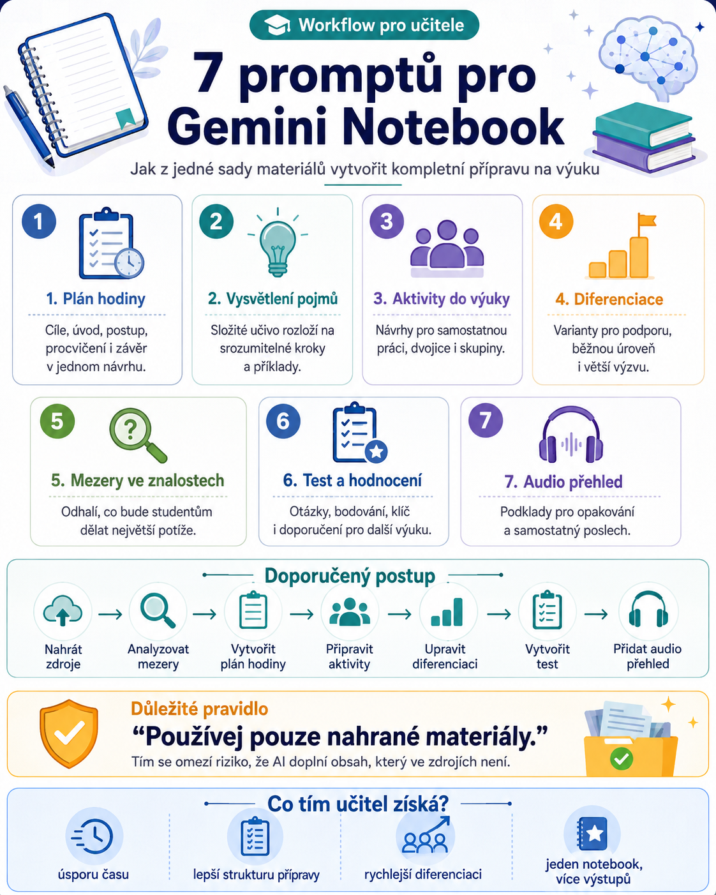

Gemini Notebook / NotebookLM nemusí sloužit jen ke shrnutí dokumentů nebo hledání informací v nahraných zdrojích. Pokud mu dáme dobře formulované instrukce, může se z něj stát velmi praktický pomocník při přípravě výuky.
Z jedné sady učebních materiálů dokáže připravit plán vyučovací hodiny, aktivity, vysvětlení obtížného učiva, diferenciované úkoly, test nebo dokonce podklady pro audio studijní materiál.
Velkou výhodou je práce se zdroji. Pokud v promptu výslovně stanovíme, že má AI používat pouze nahrané materiály, výrazně tím omezíme riziko, že do přípravy přidá informace, které v našich podkladech vůbec nejsou.
Následujících sedm promptů tak může vytvořit velmi zajímavý učitelský workflow.

1. Vytvoření kompletního plánu vyučovací hodiny
Místo jednoduchého příkazu „vytvoř přípravu na hodinu“ můžeme Notebooku přesně říct, jak má výsledná hodina vypadat.
Prompt pracuje s věkem studentů, jejich úrovní i délkou vyučovací hodiny a požaduje jasně strukturovanou přípravu od úvodní aktivity až po závěrečné ověření porozumění.
Prompt
Přizpůsob hodinu studentům ve věku [doplň věkovou skupinu], na úrovni [doplň ročník nebo úroveň znalostí] a délce vyučovací hodiny [doplň čas].
Zahrň jasně formulované vzdělávací cíle, úvodní aktivitu, postup výuky krok za krokem, řízené procvičování, samostatnou nebo skupinovou práci, průběžnou kontrolu porozumění a závěrečnou aktivitu.
Doporuč vhodné výukové strategie a u každé části uveď potřebné pomůcky a materiály. Uspořádej hodinu do jasné posloupnosti a navrhni časovou dotaci jednotlivých částí.
Zajisti, aby všechny aktivity přímo podporovaly stanovené vzdělávací cíle.
Nevkládej žádný obsah, který není podložen mými nahranými materiály.
K čemu se hodí
Výborně funguje například tehdy, když do Notebooku nahrajeme kapitolu z učebnice, vlastní poznámky, prezentaci nebo metodické materiály a potřebujeme z nich rychle vytvořit použitelnou 45minutovou hodinu.
2. Vysvětlení obtížného učiva
Jedna věc je znát odborné vysvětlení. Druhá věc je vysvětlit stejný problém studentovi tak, aby mu skutečně porozuměl.
Notebook můžeme požádat, aby složitější pojem rozložil do menších kroků, vytvořil příklady a zároveň upozornil na místa, kde studenti pravděpodobně začnou chybovat.
Prompt
Rozděl vysvětlení do jednoduchých a zvládnutelných kroků, ale zachovej správný význam daného pojmu.
Použij vhodné příklady, přirovnání, analogie a návrhy vizuálního vysvětlení, pokud jsou podloženy nahranými materiály.
Předvídej nejčastější chyby, mylné představy nebo části, které mohou studentům působit problémy. Vysvětli, jak je mohu ve výuce řešit.
Přidej několik otázek, pomocí kterých mohu ověřit, zda studenti látce skutečně porozuměli.
Nevkládej žádný obsah, který není podložen mými nahranými materiály.
Tohle je zajímavé například u odborných předmětů, gramatiky, fyziky nebo občanské nauky, kde studenti často zvládnou definici zopakovat, ale samotnému principu ještě nerozumějí.
3. Vytvoření aktivit do hodiny
Notebook nemusí vytvářet pouze obsah výkladu. Může z materiálů navrhnout také aktivity, při kterých budou studenti s učivem skutečně pracovat.
Prompt
Navrhni aktivity, které studenty aktivně zapojí do pochopení učiva, procvičování a praktického použití klíčových pojmů a znalostí z nahraných materiálů.
Podle potřeby vytvoř vyváženou kombinaci individuální práce, práce ve dvojicích a skupinové práce.
U každé aktivity uveď jasné instrukce, vzdělávací cíl, doporučený čas a potřebné materiály nebo pomůcky.
Zařaď možnosti pro diskusi, řešení problémů, spolupráci a praktické použití učiva.
Po každé aktivitě navrhni jednoduchý způsob, jak ověřit porozumění studentů.
Nevkládej žádný obsah, který není podložen mými nahranými materiály.
Výhodou je, že nemusíme přijmout celý návrh. Klidně si vybereme dvě aktivity z pěti a zakomponujeme je do vlastní hodiny.
4. Diferenciace výuky podle potřeb studentů
Tohle je podle mě jedna z nejzajímavějších možností.
Ve stejné třídě máme často studenty, kteří potřebují výraznou podporu, studenty pracující běžným tempem i ty, kteří mají úkol hotový dříve než ostatní.
Místo vytváření tří úplně rozdílných hodin můžeme zachovat společný vzdělávací cíl a upravit pouze způsob práce.
Prompt
Vytvoř diferencované varianty aktivit pro:
1. studenty, kteří potřebují větší podporu,
2. studenty pracující na očekávané úrovni,
3. studenty připravené na náročnější úkoly.
U jednotlivých variant uprav obtížnost, míru podpory, instrukce, úkoly a očekávané výsledky.
Všichni studenti však musí pracovat na stejných hlavních vzdělávacích cílech.
Zahrň praktické podpůrné strategie, rozšiřující aktivity a vhodné způsoby ověřování porozumění pro každou skupinu.
Navrhni diferenciaci tak, aby byla reálně zvládnutelná jedním učitelem v jedné třídě.
Nevkládej žádný obsah, který není podložen mými nahranými materiály.
Právě poslední požadavek je důležitý. AI totiž umí navrhnout pedagogicky krásné řešení, které by v reálné třídě vyžadovalo asi tři učitele, dva asistenty a menší štáb České televize.
Proto je dobré rovnou požadovat prakticky zvládnutelnou diferenciaci.
5. Odhalení možných mezer ve znalostech
Velmi zajímavé využití AI začíná ve chvíli, kdy ji nepoužíváme pouze jako generátor materiálů, ale jako nástroj pro analýzu učiva.
Notebook může projít naše zdroje a hledat místa, která budou pro studenty pravděpodobně problematická.
Prompt
Identifikuj pojmy, potřebné předchozí znalosti, dovednosti nebo souvislosti mezi tématy, které mohou studenti obtížně chápat, špatně pochopit nebo si je nedostatečně osvojit.
U každé možné mezery vysvětli:
• proč může studentům způsobovat problémy,
• jaké signály mám sledovat v jejich odpovědích nebo výkonu,
• jaké cílené výukové strategie mohu použít,
• jaké podpůrné aktivity mohu zařadit,
• jakými otázkami mohu problém diagnostikovat.
Upřednostni zejména mezery, které mohou negativně ovlivnit pochopení následujícího učiva.
U každé mezery navrhni také praktický způsob, jak ověřit, zda již byla úspěšně odstraněna.
Nevkládej žádný obsah, který není podložen mými nahranými materiály.
Tím se z Notebooku stává něco jako druhá pedagogická sada očí.
Neříká nám samozřejmě, co konkrétní student skutečně umí. Dokáže ale upozornit na místa, kde bychom měli během výuky zpozornět.
6. Vytvoření testu nebo jiného hodnocení
Test vytvořený AI nemusí být jen deset automaticky vygenerovaných otázek ABCD.
Můžeme požadovat kombinaci různých typů úloh, několik úrovní obtížnosti, bodování i kompletní klíč správných odpovědí.
Prompt
Vytvoř vyváženou kombinaci otázek a úloh, které ověřují znalosti, porozumění, aplikaci znalostí a vyšší úrovně myšlení tam, kde je to vhodné.
Zařaď otázky s výběrem odpovědi, otázky s krátkou odpovědí, aplikační úlohy a otázky vyžadující rozsáhlejší odpověď.
Uveď jasné instrukce a doporučené bodové hodnocení jednotlivých částí.
Každou otázku propojuj s hlavními vzdělávacími cíli a obsahem nahraných materiálů.
Přidej kompletní klíč správných odpovědí, vzorové odpovědi, kritéria hodnocení a stručný návod, jak výsledky studentů interpretovat.
Nevkládej žádný obsah, který není podložen mými nahranými materiály.
Výsledný test je samozřejmě potřeba před použitím zkontrolovat. U hodnocení studentů bych AI nikdy nenechával úplně bez učitelského dohledu.
AI připravuje. Učitel rozhoduje.
7. Přeměna materiálů na audio studijní zdroj
Gemini Notebook nabízí možnost vytvářet Audio Overviews. I zde ale můžeme kvalitu výsledku výrazně ovlivnit tím, jak přesně zadáme jeho zaměření.
Prompt
Přeměň hlavní obsah materiálů na jasnou a studentům srozumitelnou zvukovou diskusi, kterou mohou využít při učení nové látky, opakování nebo upevňování učiva.
Zaměř se na nejdůležitější pojmy, vysvětlení, příklady a souvislosti mezi jednotlivými myšlenkami.
Uspořádej obsah do logické posloupnosti tak, aby mu bylo možné snadno porozumět pouze poslechem.
Přizpůsob jazyk a hloubku vysvětlení věku a úrovni studentů.
Zdůrazni hlavní informace, kterým by studenti měli porozumět a které by si měli zapamatovat.
Audio udržuj soustředěné, poutavé a vhodné pro samostatný poslech před vyučovací hodinou nebo po ní.
Nevkládej žádný obsah, který není podložen mými nahranými materiály.
Audio pak můžeme studentům nabídnout například jako podklad k opakování před testem nebo jako doplňkový materiál po vyučování.
Jeden notebook, několik výukových výstupů
Skutečná síla těchto promptů se ukáže, když je nezačneme používat izolovaně, ale propojíme je do jednoho workflow.
Do Gemini Notebooku například nahrajeme kapitolu učebnice, pracovní list, prezentaci a vlastní poznámky.
Potom můžeme postupně:
- analyzovat možné mezery v porozumění,
- vytvořit plán hodiny,
- připravit aktivity,
- vytvořit diferencované varianty,
- nechat vysvětlit nejobtížnější pojmy,
- vytvořit závěrečné hodnocení,
- připravit Audio Overview k opakování.
Z jedné sady zdrojů tak vznikne téměř celý výukový balíček.
Důležitá věta, kterou se vyplatí ponechat
Všech sedm promptů obsahuje stejný požadavek:
„Nevkládej žádný obsah, který není podložen mými nahranými materiály.“
Není tam náhodou.
Právě práce nad konkrétními zdroji je jedna z největších předností Gemini Notebooku. Pokud chceme připravovat materiály přímo podle učebnice, metodických podkladů nebo vlastních dokumentů, je rozumnější AI co nejvíce držet u těchto zdrojů než jí jednoduše říct „vytvoř mi něco o tématu“.
Ani tak ale není výstup automaticky bezchybný. Učitel by měl vždy zkontrolovat odbornou správnost, přiměřenost úloh i to, zda návrh skutečně odpovídá jeho konkrétní třídě.
AI jako přípravna, ne autopilot
Nejzajímavější využití AI ve škole podle mě není v tom, že za učitele jedním kliknutím vytvoří pracovní list.
Mnohem zajímavější je možnost použít ji při celém procesu přípravy výuky.
Může analyzovat zdroje, upozornit na obtížná místa, nabídnout různé cesty vysvětlení, navrhnout diferenciaci, připravit procvičování a následně pomoci s ověřením znalostí.
Učitel stále drží v ruce to nejdůležitější: znalost své třídy, zkušenost a konečné rozhodnutí.
Gemini Notebook k tomu může dodat něco, čeho má učitel tradičně zoufale málo:
čas.